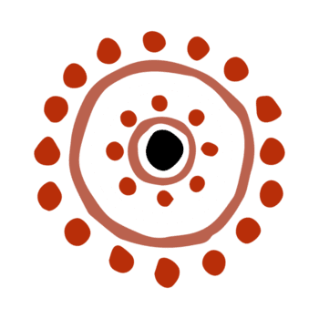
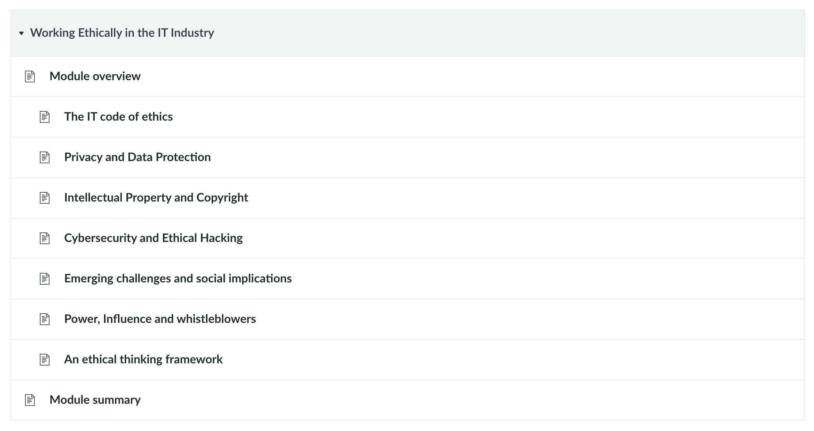
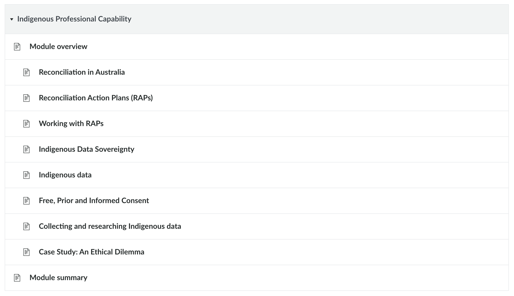
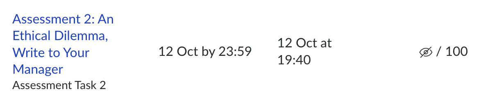

Goal 1 / Demonstrate understanding of ethical principles and practices in a professional context, especially in relation to Indigenous Communities
Developing a deep understanding of ethical principles and practices, particularly in relation to Indigenous and Torres Strait Islander communities, is of utmost importance within the computing industry. While my prior coursework has equipped me with a baseline understanding of these considerations through projects focusing on addressing the needs of the Indigenous community of Saibai Island, I recognise that my understanding of professional ethics and cultural considerations still requires further development.
I wanted to build upon this existing knowledge by exploring the ethical responsibilities of computing professionals and developing a greater sense of overall awareness. I committed myself to:
Completing both modules would provide me with the understanding needed to build upon my existing knowledge and strengthen my ability to recognise and apply ethical principles and practices.
Sigh. Maybe I should know what I want to do more by now

Sigh. Maybe I should know what I want to do more by now

Sigh. Maybe I should know what I want to do more by now
